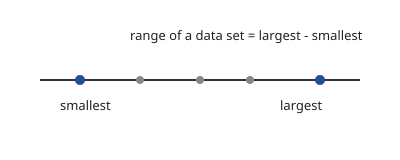

Based on Cambridge International AS & A Level Mathematics: Probability & Statistics 1 Coursebook, Chapter 3, printed p.55 (the range). Printed page 55 was read from S1.pdf (printed 55 = PDF 67). Own wording and new numbers. Teaching stops before 3.2 The interquartile range and percentiles on printed p.56.
Key words: range of a data set
The range of a data set is the numerical difference between the largest and smallest values in the set. It is easy to calculate, but it uses only the two extreme values and is therefore sensitive to outliers. For grouped data one can state a least and a greatest possible range, using the lower and upper class boundaries.

Book: the test-mark illustration on printed p.55. New numbers.
The values 3, 7, 2, 9 and 4 are recorded. What is the range of this data set?
Book: a short list used to illustrate the range, printed p.55. New numbers.
The values 4, 20, 11 and 9 are recorded. What is the range of this data set?
The values 3, 7, 2, 9 and 4 are recorded. What is the range of this data set?
\(7\)
The values 4, 20, 11 and 9 are recorded. What is the range of this data set?
\(16\)
The values 1, 8, 3, 8 and 5 are recorded. What is the range of this data set?
\(7\)
No genuine official past-paper item that is only about the range of a data set was found in the available 9709 Paper 6 QP+MS corpus, including later series, variants and years still in scope. Official questions that mention “range” almost always ask for the interquartile range, often together with a histogram or a cumulative frequency graph, or use “range” for the domain of a random variable. This is an honest gap.